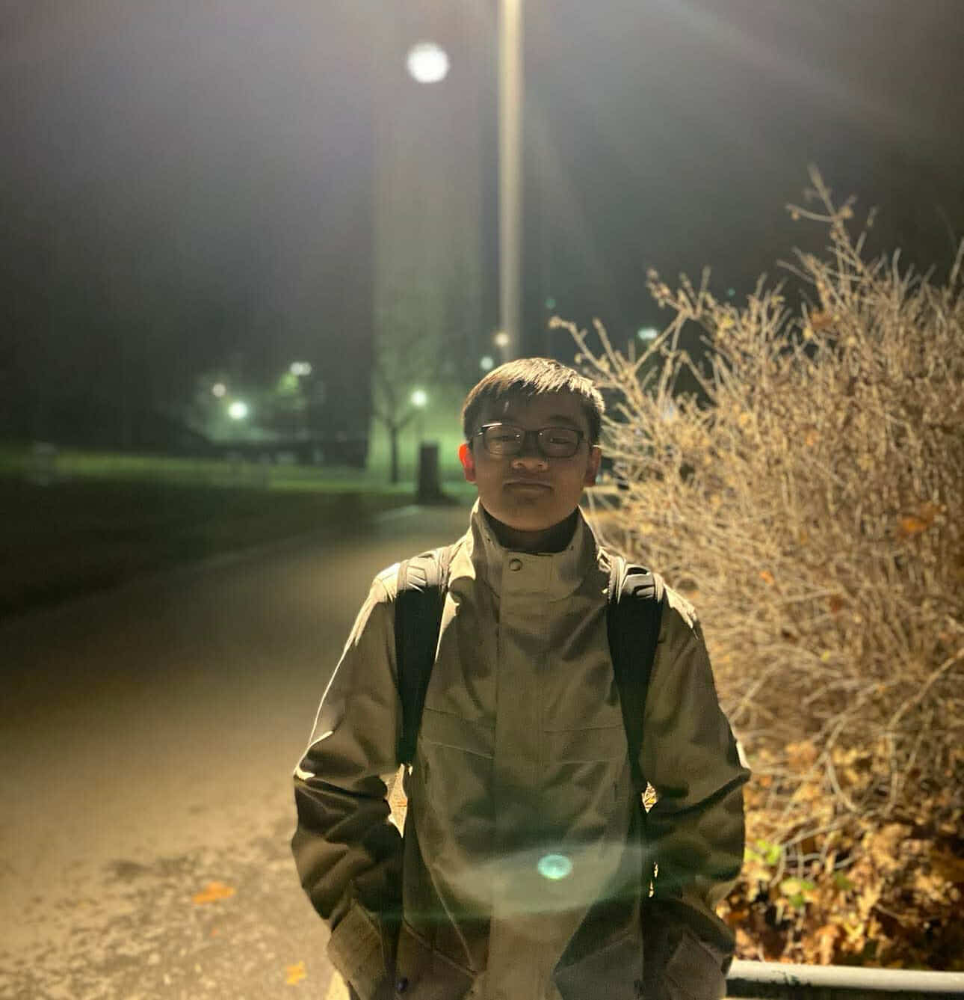

Quan Minh Tran

My name is Quan Tran, an international student from Vietnam. I am currently in my senior year at Eastern Washington University, pursuing a Bachelor of Science in Computer Science. With a strong background in computers, I am passionate about understanding and solving complex technology problems. I am dedicated to applying critical thinking and innovative approaches to address real-world challenges and create impactful solutions in the field of technology.